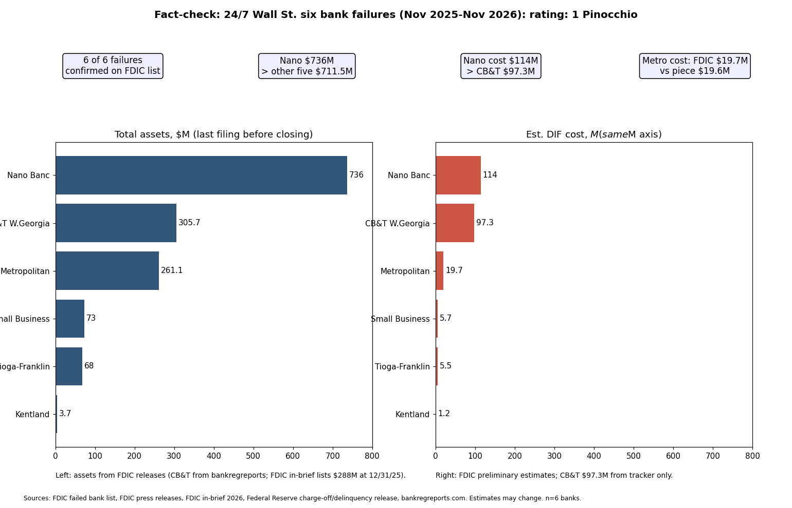

Every core fact checked out against FDIC primary sources: the six banks, closing dates, acquirers, and asset sizes (Nano Banc $736M, larger than the other five combined at about $711.5M by my sum; the piece says $712.1M). Cost estimates match FDIC releases for Nano ($114M), Small Business Bank ($5.7M), Tioga-Franklin ($5.5M) and Kentland ($1.2M). The credit card delinquency figure (2.85% in Q2 2026, 3.08% in Q4 2024) matches the Federal Reserve release exactly.
| Claim | Result | Source |
|---|---|---|
| Six failures Nov 14 2025 to Nov 14 2026 | Confirmed (list shows six in 2026; two earlier in 2025 outside window) | FDIC failed bank list |
| Nano Banc closed Sept 25 2026, Sunwest, $736M | Confirmed; $736M and $686M deposits at 6/30/26 | FDIC press release |
| Nano larger than other five combined | True, narrow | FDIC releases |
| Costs $114M / $5.7M / $5.5M / $1.2M | Confirmed | FDIC releases |
| Metropolitan $19.6M | FDIC says $19.7M | FDIC release |
| West Georgia $97.284M "largest" | Figure only on tracker; "largest" false versus Nano $114M | bankregreports.com |
| All six had an acquirer | Confirmed | FDIC list |
| Credit card delinquency 2.85% Q2 2026, 3.08% Q4 2024 | Confirmed | Federal Reserve |
| $250,000 coverage, joint $500,000, trust per beneficiary, SIPC $500,000/$250,000 cash | General rules, consistent with FDIC/SIPC published rules; not re-fetched this session (from knowledge, medium confidence) | FDIC, SIPC |
Attributed quotes: none beyond the article's own text. Confidence: high on the core facts, medium on the West Georgia cost.
Estimates are preliminary and may change as retained assets are sold.